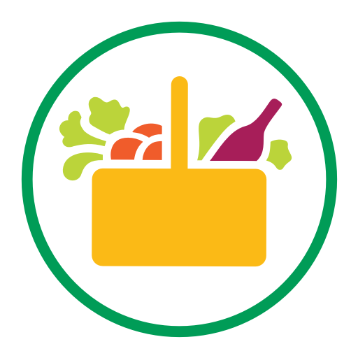

<mat-toolbar>
    
    <span >Mercadona</span>
    <span class="example-spacer"></span>
    <div *ngIf="!loggedIn">
        <button mat-button>Iniciar sesión</button>    
    </div>
    <div *ngIf="loggedIn" class="login">
        <div>dherreto
            <button class="exit-button" mat-button><span class="material-icons" style="color: rgb(0, 0, 0);">exit_to_app</span></button>
        </div>
    </div>
</mat-toolbar>